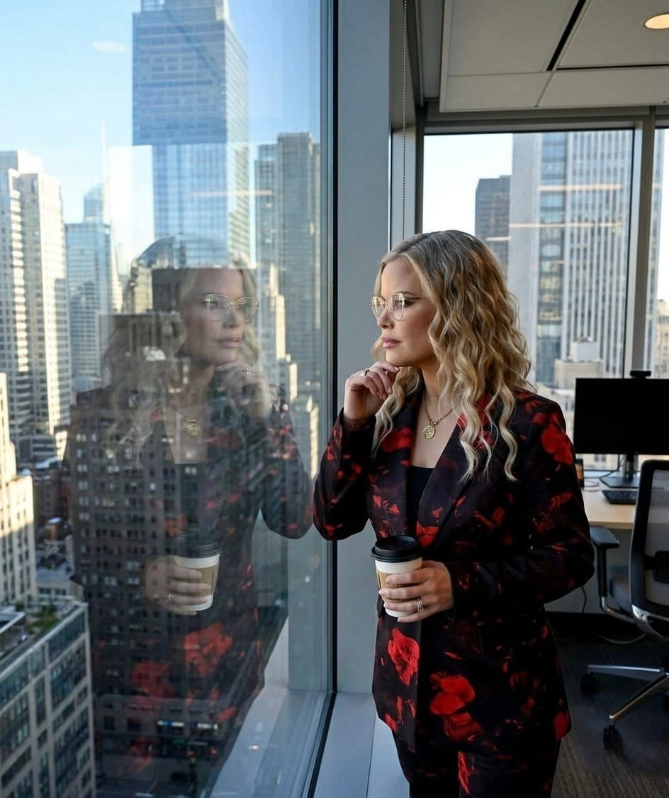
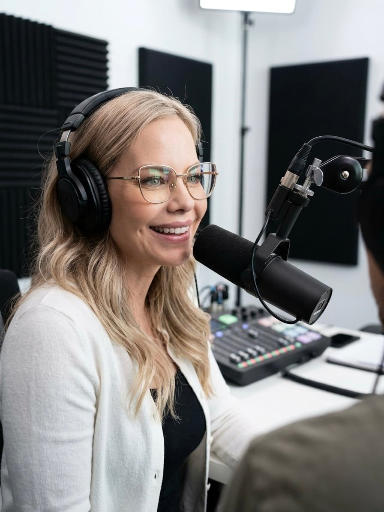

Every great leader has one.
The moment they stop waiting.
The moment they stop doubting.
The moment they stop asking for permission.
The moment they decide.
That's The YES Moment. The turning point where hesitation becomes action, uncertainty becomes clarity, and leadership begins.
Because your life doesn't change because you know more. It changes the moment you decide.
The call you've been waiting for is your own.

For more than 30 years, Misty Lavertu has helped people step into leadership, build businesses, and make decisions that change the direction of their lives.
She has led in some of the toughest environments leadership has to offer, from community organizations to entrepreneurship, spending the last 18 years building high-performing organizations where people choose to follow because trust has been earned.
After mentoring thousands of entrepreneurs and leaders, building businesses that have generated millions in sales, and studying leadership, human behavior, and neuroscience for decades, one truth continues to stand above the rest.
Most people don't have a motivation problem.
They have a decision problem.
That's why Misty created Decision-Led Leadership™, a practical leadership framework that helps people stop waiting for confidence and start leading with clarity, courage, and conviction.
Her keynotes don't simply inspire. They challenge the way people think, helping audiences recognize the decisions they've been avoiding and giving them practical tools to move forward.
Because one decision really can change everything.
“The most powerful moment in any room isn't the standing ovation. It's the moment someone decides.”
Why your life changes the moment you decide.

Every leader reaches a defining moment.
Not when they finally feel confident.
Not when the timing is perfect.
Not when fear disappears.
The moment they decide.
In this signature keynote, Misty introduces audiences to the hidden cost of indecision, what she calls Decision Drag™, and reveals how one courageous decision can transform leadership, business, relationships, and life.
Blending neuroscience, leadership principles, compelling stories, and practical strategies, audiences leave equipped to make decisions with greater confidence and lead with intention.
Why decisive leaders consistently outperform those who wait for confidence.
Why confidence isn't something you find. It's something you build.
How to stop waiting to be chosen and start leading exactly where you are.
Building businesses, cultures, and relationships that create lasting impact.
How one courageous decision can redirect the future of a business, a team, or a life.
Misty partners with organizations that want more than motivation.
She works with audiences ready to think differently, lead differently, and create meaningful change.
Every presentation is designed to create more than inspiration.
Audiences leave with practical strategies they can implement immediately, memorable concepts they'll continue talking about long after the event, and the confidence to make the decisions that move them forward.
Event planners appreciate Misty's ability to connect with audiences through authentic storytelling, practical leadership principles, and an engaging, high-energy delivery that's tailored to the unique needs of each organization.
Not theory from a book. Three decades of leading, building, and mentoring — distilled into every keynote.
Misty doesn't believe lasting change comes from motivation alone.
It comes from making one decision and having the courage to follow through.
Every keynote combines powerful storytelling, leadership strategy, neuroscience, and practical tools that audiences can immediately apply.
They leave with clarity.
They leave with language.
They leave with momentum.
Most importantly, they leave believing they are capable of leading at a higher level than they imagined when they walked into the room.
"Your audience doesn't need another motivational speech. They need a conversation that changes the way they think."
From hesitation to action.
From uncertainty to clarity.
From waiting to leading.
Every keynote is thoughtfully customized for your audience while remaining rooted in Misty's signature Decision-Led Leadership™ framework. Whether she's speaking to entrepreneurs, corporate leaders, women's organizations, or executive teams, audiences leave equipped with practical strategies they can apply immediately and a renewed confidence to make the decisions that matter most.